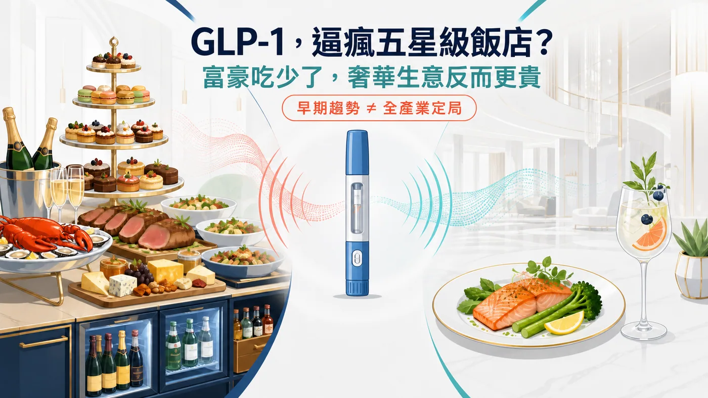
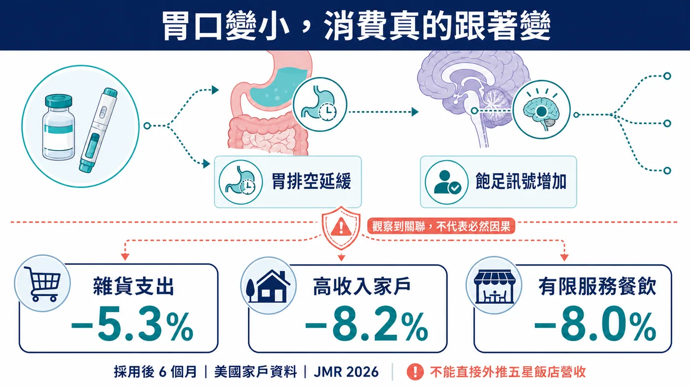
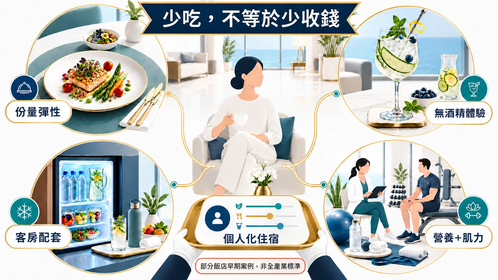
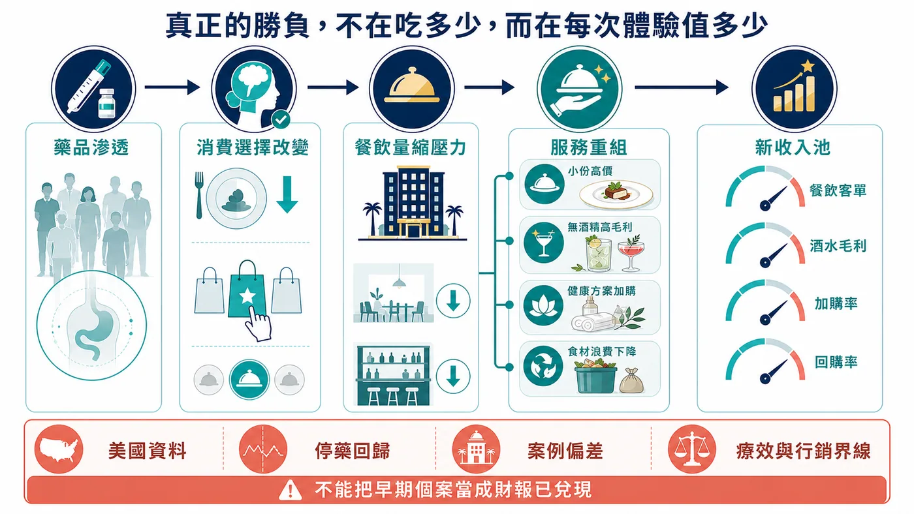

香檳冰好了、甜點塔疊滿了，住一晚幾萬元的客人卻只說：「我真的吃不下。」一項美國家戶研究顯示，使用 GLP-1 六個月後，雜貨支出平均下降 5.3%，高收入家庭下降 8.2%。高端飯店也開始測試小份餐、高蛋白與無酒精選項；但這只是第一波案例，不能直接推論全球五星飯店營收，更不能把所有改變都歸因於減重藥。
分享這篇分析
把這篇文章轉給關注生技醫藥、公司研究或資本市場的朋友。

01｜五星級飯店最熟悉的語言，原本叫做「多」
傳統奢華飯店很懂得把價值做成看得見的東西。
自助早餐要像一座小型市集，下午茶要有三層甜點塔，客房冰箱裡從巧克力、堅果到烈酒一格不缺。房費裡還包含一種「任何時刻都有人替我準備好」的感覺。
這套公式的核心，是豐盛。
可是一旦客人開始使用 GLP-1（類升糖素胜肽－1）類藥物，身體對豐盛的回應可能改變。
這類藥物會影響食慾與飽足訊號；以美國食品藥物管理局核准的 semaglutide（司美格魯肽）減重產品 Wegovy 為例，仿單明確記載它會延緩胃排空，成人減重試驗中常見噁心、嘔吐、腹瀉、便祕與胃食道逆流等腸胃道反應。
不是每個人都會出現相同反應，也不是每位使用者都突然不碰甜食。但對部分客人來說，一盤過大的高脂餐點，不再代表慷慨，反而可能變成壓力。
更值得飯店緊張的，是這件事已經開始出現在消費資料裡。
2026 年刊登於《Journal of Marketing Research》的研究，把美國家戶用藥調查與實際交易資料連在一起，追蹤 2,602 個採用 GLP-1 的家戶，並配對相近的未採用家戶。結果顯示，開始使用後六個月，雜貨支出平均下降 5.3%；年收入超過 12.5 萬美元的家戶，降幅達 8.2%；速食、咖啡店與其他有限服務餐飲的支出則下降 8.0%。
這組數字特別刺眼，因為高收入族群恰好也是高端旅宿最想留住的客人。
不過，研究談的是美國家戶消費，不能直接拿來推算全球五星飯店營收；它也顯示，部分人停藥後，雜貨支出會往原本水準靠近。這比較像一張提早亮起的警示燈，還不是飯店業的財報判決書。
而且，高收入家戶降得更多，也不代表「有錢人一定比較不想吃」。研究作者指出，收入可能同時反映藥物取得能力、原本的消費水準與生活型態。採用者雖與相近的未採用家戶完成配對，現實世界研究仍無法像隨機試驗那樣排除全部干擾因素。
因此，我們可以說高端消費者的食品支出變化值得飯店警戒；不能反過來宣稱，每個住進五星套房的人都已把胃口關掉。數字提供方向，個別客人的需求仍要靠服務現場辨認。

02｜客人吃少了，不能讓他覺得「飯店也少給了」
高端飯店真正難的，不是把牛排切小。
難的是牛排切小之後，客人仍然覺得這一餐值得。
《Forbes Travel Guide》列出的案例很能說明這場轉向。華盛頓特區瑞吉酒店的餐飲選項，開始朝較輕盈、小份、高蛋白、植物比例較高與營養密度較高的方向調整；杜哈 The Ned 的 Malibu Kitchen 提供更有彈性的份量；科羅拉多州 The Broadmoor 允許客人把餐點拆成較小份，卻不犧牲擺盤與視覺效果。
這不是把五星料理變成水煮餐。
恰恰相反，飯店得用更好的食材、更細的份量設計、更漂亮的器皿與更精準的服務，把「少」重新包裝成一種選擇權。
過去，價值感來自盤子有多滿；未來，價值感可能來自「我只吃三口，但每一口都剛好」。
這也是為什麼「撤掉所有甜點」不是好策略。原報導裡，The Broadmoor 的甜點師談的並非取消享受，而是讓替換糖、油或其他成分後的甜點，仍吃不出被犧牲的感覺。
高端服務最怕貼標籤。飯店若直接推出一張斗大的「減重針菜單」，可能讓客人覺得自己被公開分類；更聰明的做法，是把小份、高蛋白、植物導向與無酒精選項自然放進所有人的菜單，讓使用藥物的人可以選，沒有使用的人也不必被排除。
奢華於是從「替你堆滿」變成「替你拿捏」。
而高端飯店之所以可能比一般餐廳更早感受到這股變化，原因也不難理解。
一間路邊餐館可以靠翻桌率消化客單價的變動，五星級飯店卻同時背著宴會廳、早餐檯、客房餐飲、酒吧、甜點房與大量服務人力。客人只少點一杯酒、一份甜點，看起來不大；若同一種選擇在早餐、下午茶、晚餐與客房服務反覆發生，整趟住宿的餐飲收入就會被一層層削薄。
偏偏飯店又不能粗暴地把份量砍半、價格照舊。
因為高端客人買的是被理解，不是被算計。若小盤子看起來像偷工減料，省下的食材成本可能換來更大的品牌傷害。飯店必須讓客人感受到：份量變小，是因為更懂他的狀態；不是因為廚房想省錢。
這也讓 GLP-1 成為一場服務設計考試。廚師要重新安排每口的營養與味道，餐飲經理要設計小份但不廉價的價格階梯，服務人員要學會詢問偏好又不刺探病史，酒吧則要讓不喝酒的人仍能留在社交中心。
真正困難的從來不是「少放一塊蛋糕」，而是整家飯店得重新理解：客人要的豐盛，可能已經不再等於食物的重量。

03｜酒吧沒有消失，只是「微醺」開始換一種賣法
飯店最難捨棄的收入之一，是酒。
一杯調酒賣的從來不是乙醇本身。它賣的是夜晚的儀式、社交的入場券，以及一張適合拍照的桌面。若客人減少飲酒，飯店不能只把威士忌拿走，再遞上一杯白開水。
邁阿密海灘 EDITION 因此增加了無酒精調飲的版面，Four Seasons Fort Lauderdale 與 Omni La Costa 等飯店，也出現更完整的無酒精飲品選項。這些飲料並沒有放棄香氣、杯器、色彩與調飲技術；少掉酒精，價格與儀式感未必跟著消失。
但「GLP-1 讓人不想喝酒」目前還不能寫成定論。
2025 年《JAMA Psychiatry》刊登的一項小型第二期隨機試驗，在 48 名有酒精使用障礙症狀的成人中，觀察到低劑量司美格魯肽降低酒精渴望、每個飲酒日的飲用量，以及部分重度飲酒結果；可是不是所有酒精指標都顯著，研究時間也只有九週。後續系統性回顧同樣認為訊號值得追蹤，但仍需要更大型試驗。
所以，飯店增加無酒精飲品可以視為需求測試，不能被寫成藥物已經「治好酒癮」。
商業上真正有意思的是：一個原本可能消失的酒水消費，被重新設計成高單價的無酒精體驗。飯店不是向少喝投降，而是在替「不喝也要有排場」找新的收費方式。
04｜從小份餐，到一整套「用藥陪伴經濟」
當客人的問題從吃不吃甜點，延伸到如何補充營養、維持肌力、管理腸胃不適與旅行中的用藥習慣，飯店看到的會是一整條新的服務鏈，而非單張菜單。
美國四個營養與肥胖醫學專業組織在 2025 年發布聯合建議，強調使用 GLP-1 治療肥胖時，應重視營養密度、足夠蛋白質與阻力訓練，以降低營養缺口並協助維持瘦體組織。重點是「蛋白質加上肌力訓練」，不是喝一杯高蛋白飲就萬事大吉。
這也解釋了為什麼旅宿與度假村開始把廚房、健身房、營養師和恢復服務串在一起。Hilton Head Health 的官方方案，就把主廚餐點、蛋白質指導、肌力與恢復課程、營養師諮詢及料理工作坊放進住宿體驗。
更昂貴的版本甚至走向醫療邊緣。洛杉磯比佛利山四季酒店官網列出由第三方 Immortelle Integrative Health 提供的多種靜脈注射與「身體維持」服務；季節療程頁把身體維持點滴列為 750 美元，另一項包含靜脈療法的飛行前後健康方案則標價 1,000 美元。這證明高端旅宿正在測試新的付費項目，卻不等於這些療程已被高品質臨床試驗證實能替 GLP-1 使用者保住肌肉或皮膚。四季官網也明載，服務由第三方提供，飯店不為其療效背書。
這條界線很重要。
把專業營養、合理運動與貼心住宿整合起來，是服務創新；把每一瓶點滴都說成醫療奇蹟，就可能從奢華跨進智商稅。
這裡還有另一個容易被忽略的風險：隱私。
飯店為了提供冷藏空間、適合的餐點或運動安排，可能需要知道客人的部分需求；但「想吃小份」不等於客人願意公開病史，「需要冰箱」也不代表櫃檯可以追問用了哪一種藥。高端服務若把個人化做成盤問，反而會把最想留住的客人推走。
因此，真正成熟的設計不應要求住客先自我貼上「GLP-1 使用者」標籤。它應該讓任何人都能選擇小份餐、無酒精調飲、蛋白質較高的菜色、房內冷藏與肌力課程；需要醫療處置時，再清楚切換到有資格、有責任歸屬的專業人員。
飯店可以賣健康體驗，卻不能模糊醫療責任。這條線守得好，個人化會變成信任；守不好，再漂亮的健康套餐也可能變成法規與聲譽風險。
05｜GLP-1 沒有消滅慾望，只是把慾望搬家
很多人把這個故事講成食品、甜點和酒水的末日。
但消費者未必真的少花錢，他們更可能把錢移到另一個地方。
PwC 在 2026 年針對 3,000 多名現任、停用與考慮使用 GLP-1 的受訪者調查顯示，截至同年 5 月，美國約 21% 家戶有現任使用者；61% 現任使用者表示較少購買甜食，56% 較少購買鹹零食，但新鮮蔬果、蛋白質食品、營養補充，以及服裝、健身和自我照護等類別，出現不同程度的增加。
這是美國市場的調查與消費關聯，不是每個國家、每個人都會照表演出。可它指出一個很清楚的方向：當「多吃一點」不再那麼容易被販售，企業會改賣「吃得更精準、看起來更好、感覺更受照顧」。
資金並沒有憑空蒸發，它比較像沿著三個圓圈向外移動。
- 最裡面的一圈，是食物本身。 大包裝、高熱量、靠衝動加購的品項先承受壓力；份量較小、蛋白質與纖維較高的產品得到新位置。雀巢早在 2024 年就推出 Vital Pursuit，明確把產品定位在 GLP-1 使用者與體重管理族群，主打小份、高蛋白與營養密度。這不保證產品一定成功，卻說明大型食品公司已經把「胃口變小」當成產品設計題，而不是短期新聞。
- 第二圈，是身體改變後的新需求。 衣服尺寸需要重買，肌力與體能需要維持，皮膚、睡眠、運動與社交習慣也可能跟著調整。原本花在甜食與酒精上的部分預算，便可能流向服飾、健身、營養與自我照護。
- 最外面的一圈，才是旅宿最擅長的體驗。 食品公司賣的是一盒小份餐，飯店卻能把同樣的小份餐放進一段完整旅程：管家先問偏好，廚房調整份量，酒吧準備無酒精搭餐，教練安排肌力課程，客人離開時再帶走一份可延續的飲食建議。
也就是說，飯店有機會把「少吃掉的量」重新翻譯成「多出來的服務」。
這是高端旅宿比一般零食公司更有利的地方。一包餅乾縮小，消費者很容易認為它變相漲價；一道料理縮小，如果背後多了客製、故事、食材與服務，客人可能願意支付更高的單位價格。
當然，這套轉換只有在體驗真的變好時才成立。若飯店只是把普通果汁換進漂亮杯子、把水煮雞胸肉改名為代謝套餐，再收三倍價格，那不是創新，只是借熱門藥物替舊商品貼金。

對五星級飯店而言，真正的考題不是冰箱裡少放兩罐可樂。
而是能不能把小份餐做出大價值，把不喝酒做成一場體面的社交，把肌力、營養與恢復變成客人願意續購的服務，同時守住醫療證據與行銷話術的邊界。
對台灣業者來說，先量四件事，不要急著宣布革命
現在還不到宣布「GLP-1 飯店革命」的時候。更實際的是先盯三件事：小份餐的點購率是否上升、無酒精飲品能不能維持客單價、健康與恢復服務是否真的帶來回購，而不是只吸引一次打卡。
還可以再多看一個細節：浪費率。
若客人原本就吃不完，大盤餐點留下的不是價值，而是廚餘。小份化若能同時降低食材浪費、維持價格與提高滿意度，它才可能是一門好生意；若只是把盤子縮小、再掛上一張昂貴的「GLP-1 友善」標籤，熱潮退去後，消費者很快就會看穿。
不同飯店，答案也不會一樣。
商務飯店的早餐常已包在房價裡，食量下降不一定立刻減少收入，卻可能降低備餐與廚餘；度假飯店仰賴餐飲、酒吧與活動加購，需求改變就更直接；以宴會為主的飯店還得面對另一種難題——賓客吃得少了，婚宴與大型聚會是否仍要用滿桌菜色證明氣派？
因此，台灣市場第一步不該急著做一張「減重針套餐」，而是把資料收好。哪些餐點最常被剩下？小份選項會不會提高點餐意願？無酒精飲品是取代原本的酒，還是帶來新的客群？健身與營養服務有多少人願意第二次購買？
這些答案比一句「GLP-1 是下一個大趨勢」更值錢。因為真正能進財報的，從來不是趨勢本身，而是企業把趨勢翻譯成產品、價格與回購的能力。
以前的奢華，是客人一開門，桌上什麼都有。
下一個版本的奢華，可能是客人還沒開口，飯店就知道哪些東西不必端上來；剩下的每一樣，都更適合他，也更值得付錢。
GLP-1 沒有讓慾望消失。
它只是把「再來一份」，改成了「替我做得更剛好」。
主要資料來源
- Forbes Travel Guide｜How GLP-1s Are Reshaping Luxury Hospitality
- Journal of Marketing Research｜The No-Hunger Games
- 美國 FDA｜Wegovy 2025 年核准仿單
- JAMA Psychiatry｜Once-Weekly Semaglutide in Adults With Alcohol Use Disorder
- The Obesity Society 等四組織｜GLP-1 治療期間的營養優先事項
- PwC｜2026 GLP-1 Consumer Trends
- Hilton Head Health｜GLP-1 Support Experience
- Four Seasons Los Angeles｜Immortelle
- Nestlé USA｜Vital Pursuit
事實查核截止：2026 年 8 月 31 日。
免責聲明：本文為產業與科普資訊整理，不構成醫療、用藥或投資建議。GLP-1 類藥物的適應症、副作用與使用方式，應由合格醫療專業人員依個別狀況評估。
引用本文
若在簡報、報告或社群討論引用，建議附上 Drugnews 原文連結。
Drugnews 編輯部，〈減重針逼瘋五星級飯店？客人吃少了，飯店靠什麼賺？〉，Drugnews｜藥時事，2026/08/31，https://drugnews.com.tw/articles/2026-08-31-glp1-luxury-hospitality-spending-shift.html